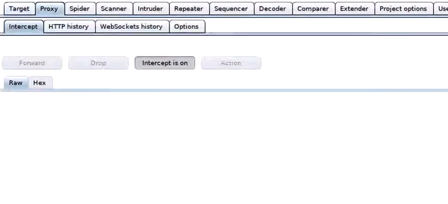
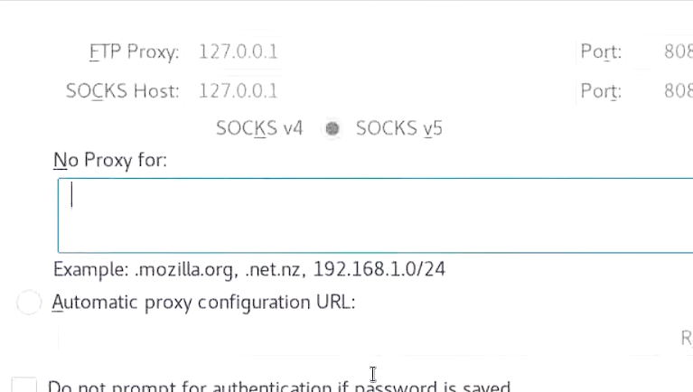
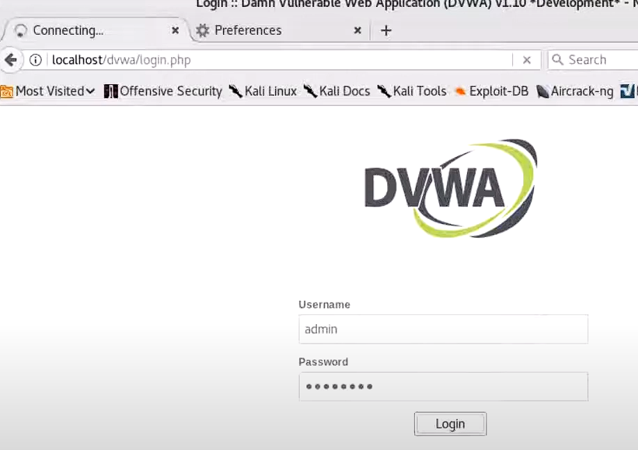
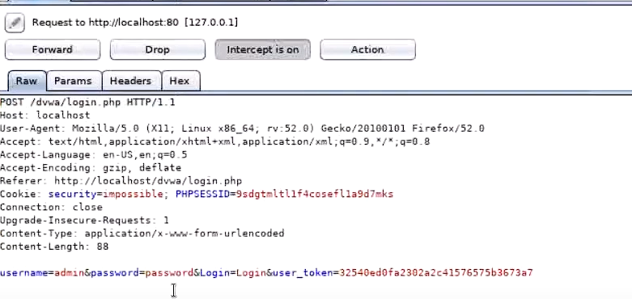

Burp Suite
Hijacking
A software security tool called Burp Suite is used to evaluate web apps for vulnerabilities and
we are going to use it for session hijacking.The malicious act of seizing control of a user's web
session is known as session hijacking. When it comes to online browsing, a session is a sequence
of exchanges between two communication endpoints that are protected by a shared session token.
First we open Burp Suite and go to Proxy:

Then we open firefox and go to Preferences/Advanced/Networking and delete local host proxy:

Now login to DVWA localhost:

You are going to notice that the page is loading for too long and not openingOpen Burp Suite and you will see that the session is hijacked successfully:

You can see that username, password and login information are all available.